第30天：指令编码
第30天：指令编码
终于来到了汇编器的指令编码环节。
所谓指令编码，就是指将抽象的助记符（如 MOV、PUSH）根据机器码格式（Opcode、ModR/M 等字段）转换为具体的二进制字节序列。
因为 csub 生成的汇编代码仅使用了少量的指令，且寻址模式简单，所以把这些指令翻译成二进制代码并不难。
实现思路就是在语法分析的时候，收集指令操作码、操作数等信息，收集完毕后，从指令模板库中查找可以与之匹配的指令描述。找到后，根据指令描述翻译指令，最终生成二进制编码。
inst_info_t：收集指令信息
首先看几个结构体的定义。
1 | |
inst_info_t 这个结构体用来收集一条指令的信息。
第 4 行，这是 ass_token_e 类型，为了和指令手册中的 opcode 区别开，我们叫它 opcode_token，“学名”叫指令助记符；
第 5 行，操作数的个数，可以是 0，1，2
第 6 行，operand_info_t 用来描述操作数信息。这是一个具有 2 个元素数组，因为操作数最多有 2 个。对于 0 操作数的指令，这个成员用不上；对于 1 操作数的指令，仅使用 operand[1];
第 7 行，这是为了把要翻译的指令打印出来，和二进制代码对比着看，算是锦上添花的功能。这不是重点。
第 9 行，链表的头节点，用来收集重定位信息，放在最后讲。
我们每解析一条指令，就生成这条指令的二进制编码（打印到标准输出或者写入到一个临时文件）。
第 12 行，定义了一个 inst_info_t 类型的全局变量，每次解析指令之前，要调用 inst_info_init 函数初始化这个变量。
inst_info_init 函数也不复杂，第 16 行，清零每个字段。
第 17 行，初始化重定位链表。
第 18 行，设置指令助记符，它的源头是 scanner->token;
operand_info_t：收集操作数信息
1 | |
第 5 行，操作数的类型。粗略划分，操作数可以分成三类，就是 3~4 行注释写的，立即数（OPERAND_TYPE_IMM）、寄存器（OPERAND_TYPE_REG）或者内存操作数（OPERAND_TYPE_MEM）。
第 6 行，当指令中出现 byte […] 或者 dword […] 的时候，这个值就是 1 或 4；如果 [ ] 左边没有指定大小，这个值是 0；
为了讲解后面的代码，我们先复习一下寻址模式。如果读者能复习之前内容——x86指令格式入门，那就更好了。
x86-32 寻址方式如下表：
| 序号 | 类型 | 形式 | 示例 | 说明 |
|---|---|---|---|---|
| 1 | 立即数 | imm |
mov eax, 10 |
硬编码在指令里 |
| 2 | 寄存器 | reg |
mov eax, ebx |
mod 字段可以表示 |
| 3 | 绝对地址 | [addr] |
mov eax, [my_var] |
mod = 00b, r/m = 101b |
| 4 | 寄存器间接 | [reg] |
mov eax, [esi] |
mod 字段可以表示，但是 [ebp] 除外，[esp] 也除外 |
| 5 | 基址+偏移 | [base + disp] |
mov eax, [ebp + 8] |
mod 字段可以表示；但是[esp + disp] 除外 |
| 6 | 变址+比例+偏移 | [index*scale + disp] |
mov eax, [edi*4 + 8] |
需要 SIB 字段 |
| 7 | 基址+变址+比例+偏移 | [base + index*scale + disp] |
mov eax, [ebx + esi*4 + 8] |
需要 SIB 字段 |
csub 仅用到了前 5 种，没有用到 6 和 7
1 | |
前 5 种我们定义成宏。
再回到 operand_info_t 结构体，第 9 行，addressing_form 的取值是 1~5；
如果寻址方式是 ADDR_FORM_REG（2） 和 ADDR_FORM_REG_INDIRECT（4），就用第 8 行的 reg_name 来表示寄存器；
如果寻址方式是 ADDR_FORM_BASE_DISP（5），就用第 10 行的 base_reg 来表示基址寄存器；
第 13 行 disp，表示绝对地址或者偏移，用于 ADDR_FORM_DIRECT（3）和 ADDR_FORM_BASE_DISP（5）；
第 14 行的 imm，表示操作数是立即数，也就是 ADDR_FORM_IMM（1），则用这个字段来保存立即数。
ass_inst
下面我们讲解代码，重点是在语法分析的过程中，收集操作数信息。
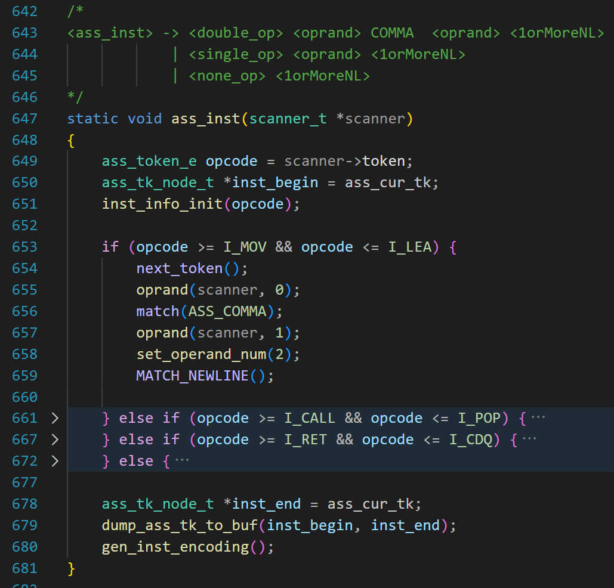
这是解析指令的入口函数。
第 644，672，673 是为了打印指令本身，方便和编码对照阅读，不是重点；
第 645 行，用扫描器得到的指令助记符初始化全局变量 one_inst_g；
第 647~666 行，判断是哪一种指令助记符（双操作数、单操作数、零操作数）；
这里面用到了 oprand() 函数，用来解析操作数。
oprand
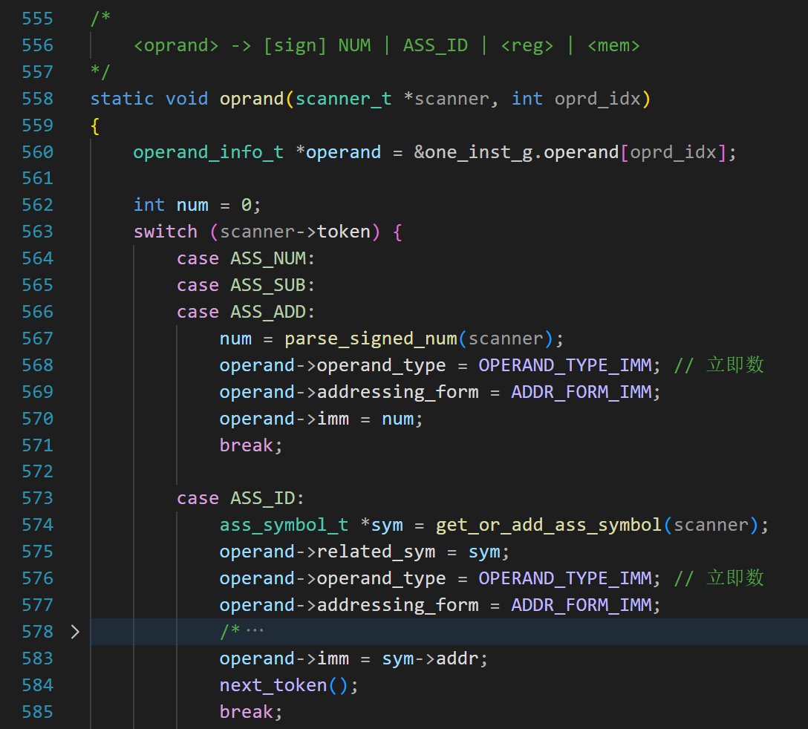
如果是当前的 token 是立即数，会进入第 564 行。
第 560 行，根据 oprd_idx 这个参数，得到对应的 operand 的指针。
第 568~569，设置操作数的类型为立即数，寻址模式为立即寻址（其实不用寻）。
第 570，记录立即数。
如果当前的 token 是标识符，则说明指令的操作数是对符号的引用，其实符号的本质就是一个地址，作为操作数，和立即数没有什么区别。
所以第 583 行，记录符号的地址。细心的读者肯定看到第 575 行，这个是和重定位有关，先不用管。
继续看代码
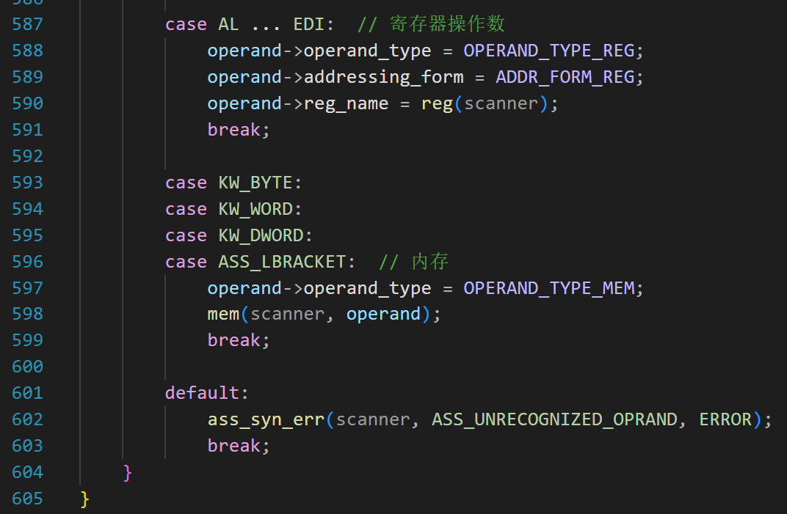
如果当前的 token 是某个寄存器，第 588 设置操作数类型为寄存器，第 589 设置寻址模式为寄存器寻址；
第 590 行调用 reg() 看看是哪个寄存器，并设置 reg_name；
如果当前的 token 是指示大小的 byte、dword 或者是 “[”，说明是内存操作数，第 597 行，设置操作数的类型为 OPERAND_TYPE_MEM；
第 598 调用 mem 做进一步的解析。
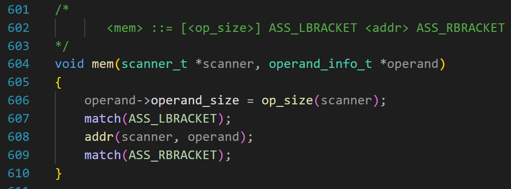
mem() 函数非常简单，第 608 行调用了 addr()，这是重点。
addr
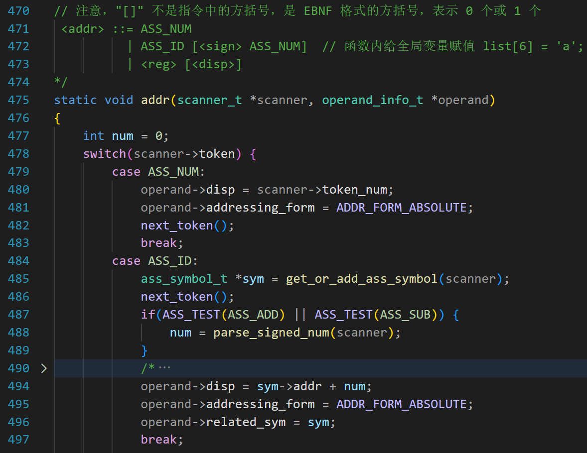
如果当前的 token 是数字或者标识符，说明是直接寻址。
对于数字，第 467 行，把数字保存到 disp 字段，这个 disp，对应 x86 指令格式中的地址偏移。
第 468 行，设置寻址模式为直接寻址。
如果地址里面包含符号，例如 mov eax, [list + 3]；
首先查询符号表，也就是第 472 行，这是为了获得符号的地址 sym->addr；
第 474，判断符号后面是不是还有类似 “+3” 的偏移。
如果有，这个偏移（可正可负）和符号地址加在一起，作为 disp 字段的值。
第 479 行不用管，后面讲重定位的时候会详细说明。
这个函数还没有完。
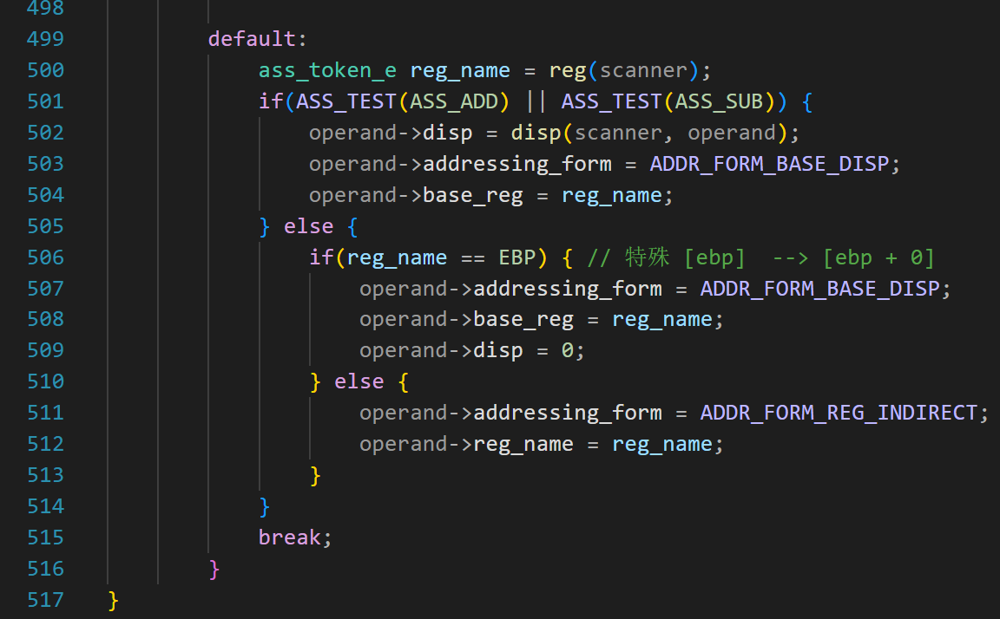
这部分用来解析产生式 <reg> [<disp>];
寄存器的名字肯定有，后面的偏移是可选的。
第 500 行，获得寄存器的名字。
第 501 行，判断带不带偏移，如果带，那就调用 disp() 获得具体的偏移值。
第 503 行，设置寻址模式为 ADDR_FORM_BASE_DISP（基址+偏移），第 504 行，设置基址寄存器的名字。
如果没有偏移，则对应 506~513；这部分代码又分为 if 和 else;
我们先看 else，第 511，设置寻址模式为寄存器间接寻址，例如 mov eax, [ecx];
但是，如果碰上用 ebp 寄存器来寻址，形如 mov eax, [ebp]，那就要变一下，改成 mov eax, [ebp + 0];
如果读者不理解，可以复习之前内容——x86指令格式入门，重点看 ebp 的部分。
所以，第 507，强行转换为 ADDR_FORM_BASE_DISP 寻址，设置 disp 是 0，虽然是 0，但是编码的时候需要这个 0；
到这里，对操作数信息的收集就完成了。
指令模板
把源文件中的指令翻译成二进制表示，离不开编码规则。去哪里找编码规则呢？我们要生成 Intel 架构的指令，当然是看 Intel 的官方手册。
下图是指令集参考手册的封面（电子版），所有关于指令的一切，都在这里面。
这个文档有 2500 多页，读者不要被吓到了。我们需要读的恐怕不会超过30页。
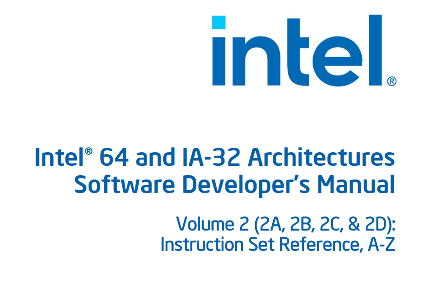
下图是 Mov 指令的指令格式（Instruction Format）（仅截取部分）
Intel 把这个表格叫 “指令格式”（Instruction Format），其中第二列又叫做 “Instruction”，这确实不符合我们的认知。
所以我要改改：
1、下面表格的每一行都是一个指令描述（instruction description），后文就要指令描述或者指令模板；
2、csub 支持的所有指令及其指令描述叫“模板库”
3、表格中的第二列，叫“指令格式”
注意：上节课我们介绍的 “x86 指令格式”，特指指令编码由指令前缀、主操作码、ModR/M byte 、SIB、偏移、立即数几个部分组成，每个部分如何编码等。这个也叫 “指令格式”。
下文若出现 “指令格式”，请读者根据上下文区分。
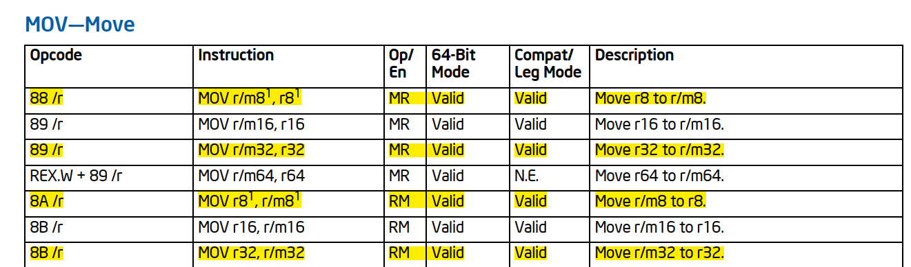
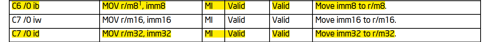
因为 csub 生成的指令不包含 16 位格式，所以我们仅使用 8 位和 32 位的格式。具体说，我们只用到其中的 6 种，就是我用黄色高亮标注的。
先介绍一下几个符号：
-
r/m8 表示 8 位的寄存器或者某个内存地址；
-
r/m32 表示 32 位的寄存器或者某个内存地址；
-
r8 仅表示 8 位的寄存器；
-
r32 仅表示 32 位的寄存器；
-
imm8 表示一个 8 位的立即数；
-
imm32 表示一个 32 位的立即数；
-
rel32 表示 32 位的相对偏移量，例如 call 指令的一个格式是 CALL rel32；
下面的汇编代码列出了一些具体的指令；指令后面的注释是与之匹配的格式。
注意，第 2 行的 mov cl, al,第 5 行的 mov eax, ecx,和它们能匹配上的格式不止一个。
1 | |
第 1 行，指令是 mov [eax], al
-
第一个操作数（后面简称 oprd 1）是内存,所以 oprd 1 必须带 “m”
-
第二个操作数是（后面简称 oprd 2）是寄存器，所以 oprd 2 必须带 “r”
-
又因为 al 是 8 位的寄存器，所以需要带 “8”
同时满足上面三个条件的，只有一个格式 “mov r/m8, r8”
再比如第 2 行，指令是 mov cl, al
- oprd 1 必须带 “r”；
- oprd 2 必须带 “r”；
- 都是 8 位的寄存器，需要带 “8”
同时满足这三个条件的，有 2 个格式，“mov r/m8, r8” 和 “mov r8, r/m8”
至于用哪一个，那就看我们的心情了。
操作码编码规则
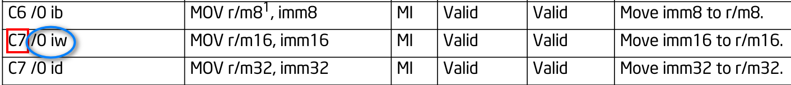
表格第一列叫 “opcode”，为了讲解方便，我决定改一下：
1、十六进制的数，叫做“主操作码”或者“操作码”（opcode）
2、操作码后面的 “/0”、“iw” 叫做“操作码的编码规则（简称编码规则）”，或者 “编码的附加信息”
官方手册在“Opcode Column in the Instruction Summary Table”这一节，解释了各种编码规则。
我帮读者翻译一下我们会用到的几个：
| 操作码编码规则 | 含义 |
|---|---|
| /digit | digit 是一个 0 到 7 之间的数字，表示该指令的 ModR/M 字节仅使用 r/m 操作数。ModR/M 字节的**寄存器（register）**字段包含该数字，用作指令操作码的扩展 |
| /r | 表示指令的 ModR/M 字节既包含一个**寄存器（register）**操作数，也包含一个 r/m 操作数。 |
| cb, cw, cd, | 跟在操作码后面的 1 字节 (cb)、2 字节 (cw)、4 字节 (cd)的数值。该值用于指定代码偏移量（code offset），有时也用于指定代码段寄存器（CS）的新值。 |
| ib, iw, id | 跟在操作码、ModR/M 字节或 SIB 字节之后的 1 字节 (ib)、2 字节 (iw)、4 字节 (id)的立即数。由操作码决定该操作数是否为有符号数。所有字（word）、双字（doubleword）和四字（quadword）均采用小端序（低位字节在前）。 |
| +rb, +rw, +rd | 表示操作码字节的低 3 位用于对寄存器操作数进行编码，不使用 ModR/M 字节。指令列表中会给出低 3 位为 000b 时的操作码十六进制值，需要把寄存器编号（ 0 到 7 ）加到这个操作码上。 |
如果你看了这个表格觉得头大，我还有一个说人话的版本：
| 操作码编码规则 | 含义 | Opcode 举例 | instruction 举例 |
|---|---|---|---|
/digit |
ModR/M 的 reg 字段要填写为 digit,用于扩展 opcode | 81 /7 id | CMP r/m32, imm32 |
/r |
ModR/M 同时包含寄存器和 r/m 操作数 | 88 /r | mov r/m8, r8 |
cb/cw/cd |
跟在操作码后面的 1 字节 (cb)、2 字节 (cw)、4 字节(cd)相对偏移量 |
E9 cd | JMP rel32 |
ib/iw/id |
跟在操作码、ModR/M 字节或 SIB 字节之后的立即数（1/2/4 字节） | 2D id | SUB EAX, imm32 |
+rb/+rw/+rd |
寄存器编号加到基础 opcode 上;不使用 ModR/M 字节 | 50+rd | PUSH r32 |
需要注意，编码规则可以“混搭”，例如 “CMP r/m32, imm32”，不但用了规则 “/7” ，还用了规则 “id”；
意思是 ModR/M 的 reg 字段要填写为 7，而且操作码、ModR/M 字节或 SIB 字节之后还有一个 4 字节的立即数（就是模板中的 imm32）
这个规则 “id”，我觉得是不言自明的，因为指令格式的 oprd 2 是 imm32 。
除了操作码后面的规则，还有一个地方要注意，第三列“Op/En”，例如 “MR”、“MI”。什么意思呢?
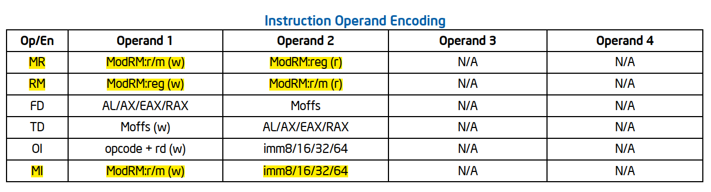
表格的后面有一个 “Instruction Operand Encoding”，详细说明了意思。
比如第一行，“M”表示 oprd1 用 ModRM 字节的 r/m 字段编码，后面的“w” 表示操作数的值会被处理器更新，“R”表示 oprd2 用 ModRM 字节的 reg 字段编码,后面的“r” 表示处理器只读取这个这个操作数。
inst_description_t
下面我们可以看代码了。
1 | |
这个结构体用来描述指令的格式和编码规则，可以认为它对应一条指令描述。
第 3 行，这是 ass_token_e 类型的字段，和指令助记符对应。例如只要是 mov 指令，不管是什么格式，这个字段就是 I_MOV；
第 4 行，字符串，对于 I_MOV 就是 “mov”，为了打印日志；
第 5 和 6 行是一对，分别代表指令主操作码的长度和主操作码的值。因为主操作码不会超过 3 个字节，用 int 类型足够了。
第 7 行用来表示操作码编码规则，用字符串描述，例如 “/digit”、“/r”，前文已经介绍过。
第 8 行是操作数的个数，0~2个；
第 9 行是操作数的格式说明，用字符串描述，例如“r/m8”、“r32”;
数组元素有 2 个，operand_fmt[0] 对应第一个操作数（如果有的话），operand_fmt[1] 对应第二个操作数（如果有的话）。如果没有操作数，那初始化的时候都是 NULL；
第 10 行，用于加入链表。我们用一个链表把所有指令描述管理起来。
如何创建一个指令描述呢？或者说添加一个指令模板。
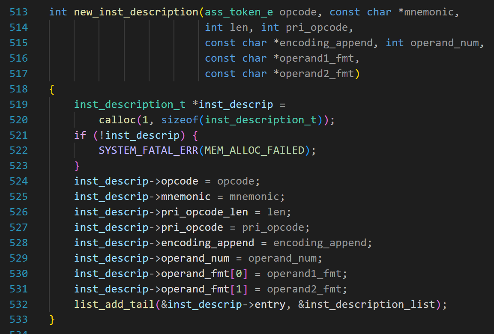
代码很傻瓜,就不多解释了。
我们可以调用这个函数，把所有的指令模板都加进去。
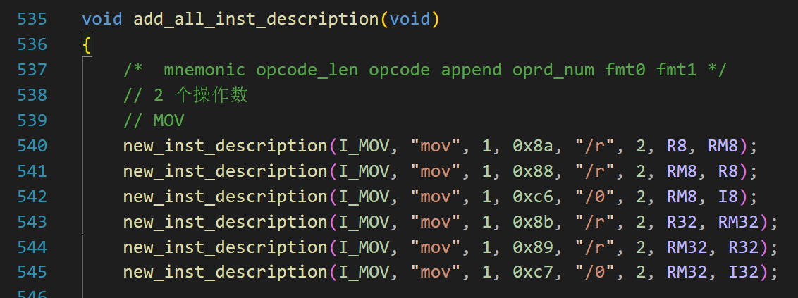
上面的代码就是针对 mov 的 6 种格式，创建指令描述。
第三个参数是 1，表示主操作码是 1 个字节。
第四个参数是主操作码。
第五个参数是操作码编码规则。
第六个参数是操作数的个数，对于 Mov 指令都是 2；
第七个和第八个参数是 oprd1 和 oprd2 的格式。
我把指令手册中的 “r8” 、“r/m32” 等字符串都定义成宏，代码如下
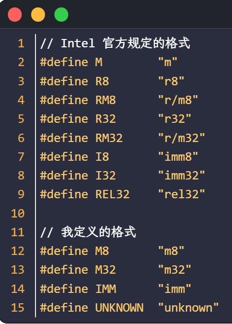
第 12~15 行是我自己定义的格式。
前文说了，编码规则可以“混搭”，例如带立即数的 mov 指令。
1 | |
上面代码的第 542 和 545 行，第四个参数是“/0”
“id” 和 “ib” 去哪里了？
这是因为指令格式里面已经有 imm32 或者 imm8 了，这已经传达了指令编码中含有 32 或 8 位立即数的信息，所以我省略了“id” 和 “ib”;
另外，前面介绍过的 “Instruction Operand Encoding” 也是有规律的
| Op/En | Operand 1 | Operand 2 |
|---|---|---|
| MR | ModRM:r/m | ModRM:reg |
| RM | ModRM:reg | ModRM:r/m |
| MI | ModRM:r/m | imm8/16/32/64 |
如果操作数的格式是 r/m32 或者 r/m8，肯定是用 ModRM:r/m 编码
如果操作数的格式是 r32 或者 r8，肯定是用 ModRM:reg 编码；
所以，指令描述中也不需要这个表格。
同理，call 指令中的 Op/En 描述也是冗余信息。
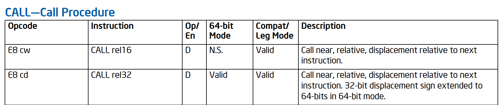
对于 call 指令， Op/En 列的 D 是什么意思？
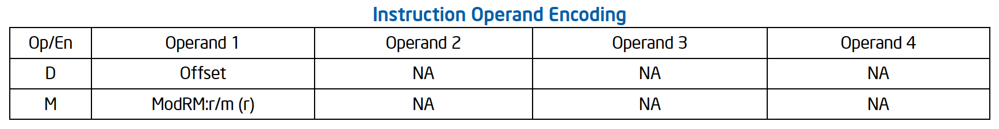
因为“cd” 就是 code offset 的意思，所以上面表格中 “Offset” 也是多余的;
就目前来看，指令描述结构体 inst_description_t 的 encoding_append 字段是 char * 类型，表示一条编码规则是足够的。如果后面需要编码规则混搭，我们再改代码。
指令编码的入口函数
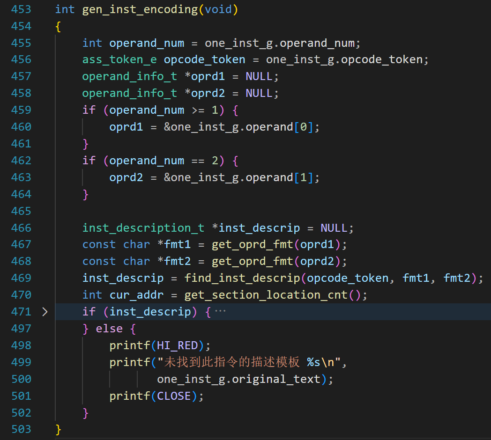
指令的信息已经收集到了 one_inst_g 变量中。
第 457~458，oprd1 和 oprd2 的初始值都是 NULL
第 459~464，根据操作数的个数设置 oprd1 和 oprd2；如果是一个操作数，那么 oprd1 有效，oprd2 是 NULL；
第 467~468，获得操作数的格式。函数 get_oprd_fmt 马上会讲。
第 469 行，根据操作数的格式选择指令模板。
获取操作数的格式
为了给要编码的指令选择模板，需要分析这个指令的操作数格式。
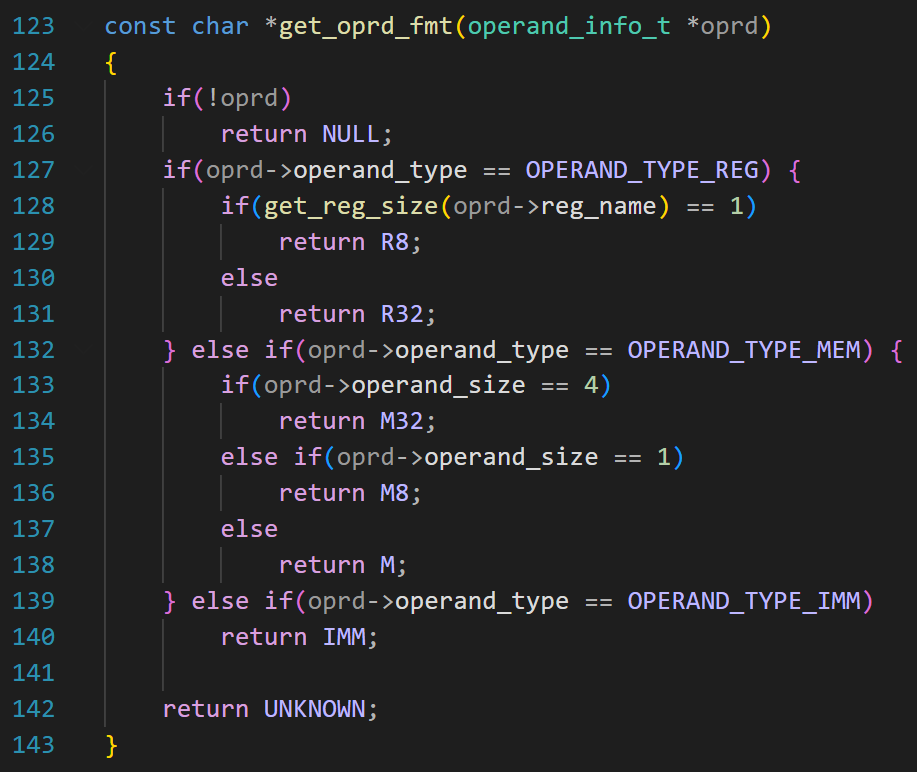
前面解析操作数的时候，已经把操作数分为三种类型（寄存器、内存、立即数）；
第 128 行判断寄存器是 8 位还是 32 位。get_reg_size 函数代码如下：
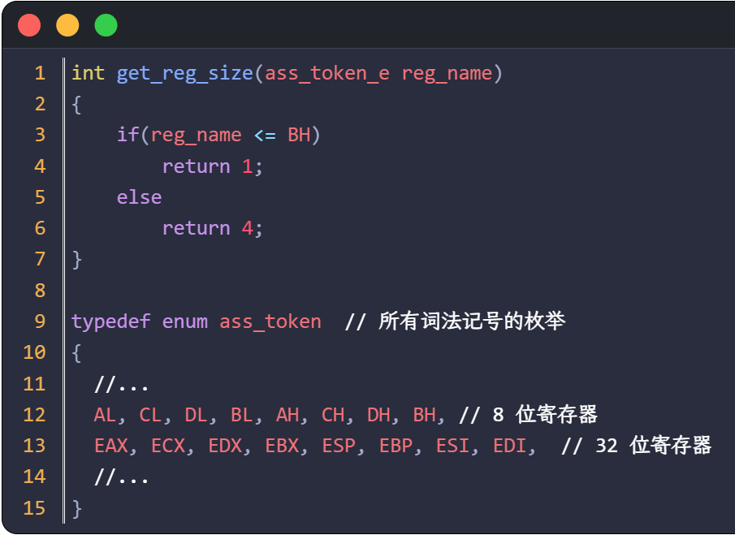
这也提醒我们，枚举列表中的成员顺序不能轻易修改，否则 get_reg_size 这个函数可能 work 不起来。
前面收集指令信息的时候，如果 [ ] 前面有 byte 或者 dword 修饰，就会设置 operand_size 字段为 1 或者 4；如果没有任何修饰，那么这个字段是 0；
第 133~138，根据 operand_size 字段返回 M32 或者 M8，如果 operand_size 是 0，返回 M（只知道是内存，宽度未知）；
所以，这个函数的返回值可能是 R8、R32、M8、M32、M、IMM、UNKNOWN 和 NULL；
返回 NULL 表示没有对应的操作数；如果返回 UNKNOWN，说明我们的代码有问题。
查找模板
请看 find_inst_descrip 函数：
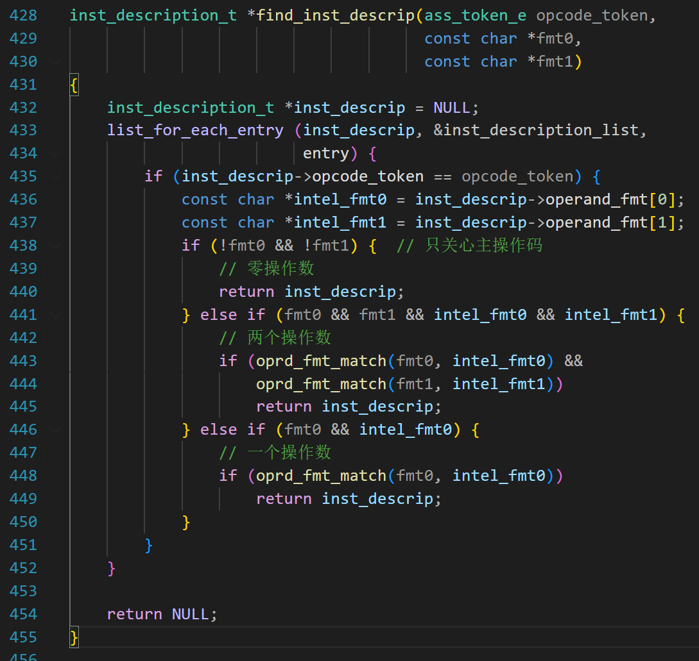
第 433 行，遍历指令模板的链表；
第 435 行，判断助记符是否相等，如果相等，拿出模板的 operand_fmt；
第 438~450，根据指针是否为 NULL，分成三种情况；
第 440 行，零个操作数，直接返回当前的节点；
第 441 行，双操作数，如果两个操作数的格式都可以和模板匹配，则返回当前的节点；
第 446 行，单操作数的情况，不赘述。
下面介绍 oprd_fmt_match 函数。
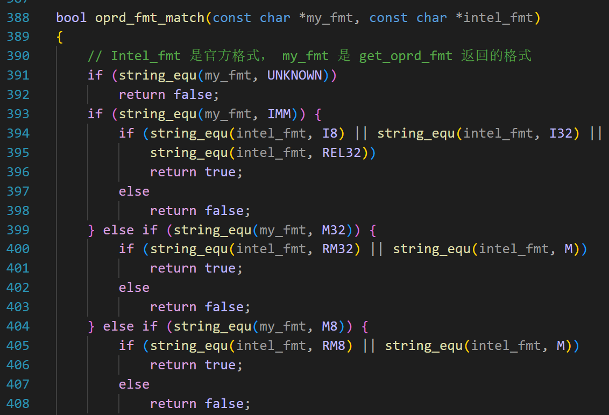
第 391 行，如果 my_fmt 是 UNKNOWN，那说明我们的汇编器有 bug；
第 393 行，如果我们的格式是立即数，那可以和模板的 I8，I32 匹配，如果你纠结位宽，先等等，后面会说这个问题。
注意，立即数也可以和 REL32 匹配。
例如 jmp xxx，在官方手册中，xxx 叫 REL32；
在我们的代码中，xxx 是立即数。因为解析 xxx 的时候，会执行 oprand 函数的 case ASS_ID 分支，把它当立即数处理。如下代码：
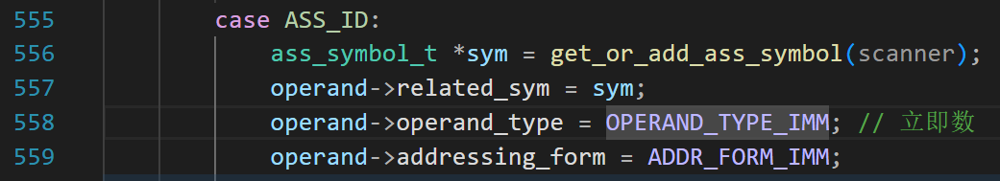
第 399 行，我们的格式是 M32，那只能和格式的 RM32，M 匹配。注意，格式的 M 是说只要是内存就可以，对位宽不做限制。
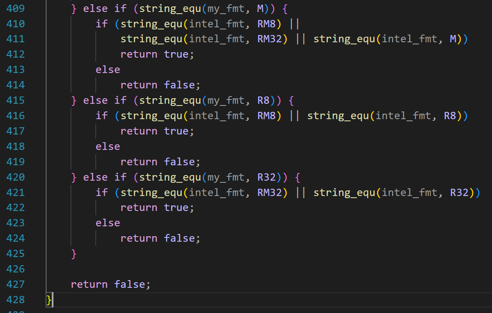
第 409 行，我们的格式是 M，可以和格式的 RM8，RM32，M 匹配。
这里有读者或疑惑，如果是 8 位的内存，你怎么就让它和 RM32 匹配呢？
或者如果是 32 位的内存，你怎么就让它和 RM8 匹配呢？
1 | |
一般情况下，对于双操作数的指令，如果一个操作数是内存，且没有 byte 或者 dword 指示大小，那么肯定靠另一个操作数（一般是寄存器）来指示大小。例如上面的第 1~4 行，全靠寄存器指明数据宽度。
如果一个操作数是内存，另一个是立即数，那么肯定会有 byte 或者 dword 指示内存大小。例如上面的 6 ~7 行。
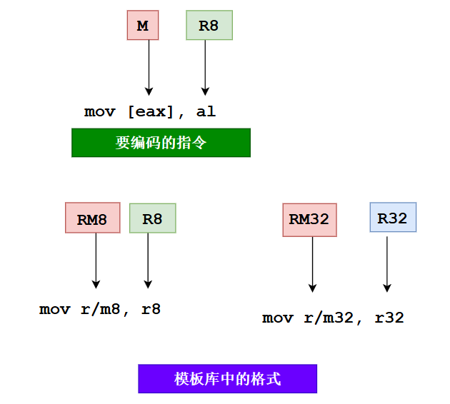
假设要编码的指令是 mov [eax], al;
我们提取出来的格式是 “M，R8”;
格式库中最可能和它匹配的，只有 2 条。 “mov r/m8, r8” 和 “mov r/m32, r32”;
格式分别是 “RM8，R8” 和 “RM32，R32”;
如果不让 M 和 RM8 匹配，也不让 M 和 RM32 匹配，那就没有格式能匹配了，这显然不合理。
反之，让 M 和 RM8 或者 RM32 匹配，“mov r/m8, r8” 和 “mov r/m32, r32” 就会被筛选出来，
但是因为第二个操作数 R8 只能和 R8 匹配（图中绿色方框），就选中了 “mov r/m8, r8”;
同理，如果指令中含有立即数，提取出来肯定是 IMM，让它和 I8 或者 I32 匹配，目的是把可能的格式都筛选出来，然后靠另一个操作数（肯定有位宽信息）决定最终选择哪个格式。
当助记符和格式都匹配上了，模板就定了。
编码
为了临时保存编码，我设计了结构体。
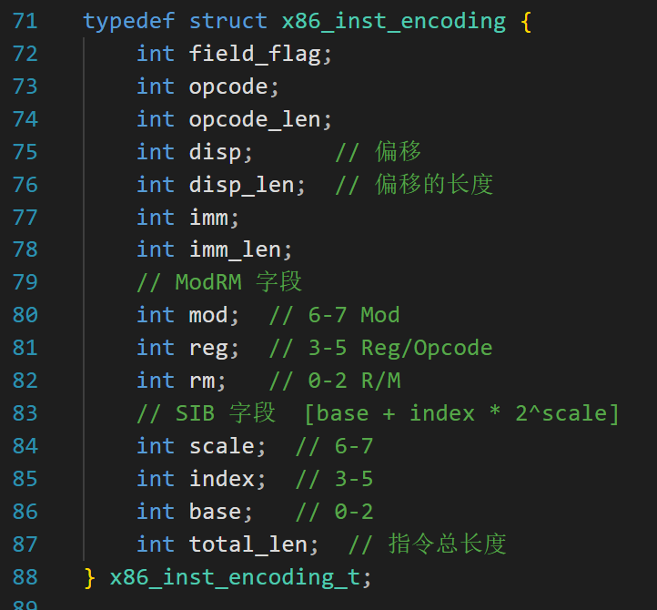
第 72 行的 field_flag 表示都包括哪些字段。
第 73 行是主操作码，第 74 行是主操作码的长度，1~3字节。
第 87 行是指令总长度，这个值会随着指令编码过程逐步增加，例如 ModR/M 编码完成,就会增加 1，SIB 编码完成，再增加 1。
复习一下，指令的通用格式是
1 | |
前缀我们用不到,Opcode 必须有，可选的是 ModR/M、SIB、Displacement、Immediate;
第 8~11 行，定义了 4 个宏，分别表示可选的 4 个字段，如果指令编码中有这个字段，field_flag 就会把对应的位置 1；
一旦找到匹配的模板，就可以调用 encoding_inst_by_description 函数;
encoding_inst_by_description
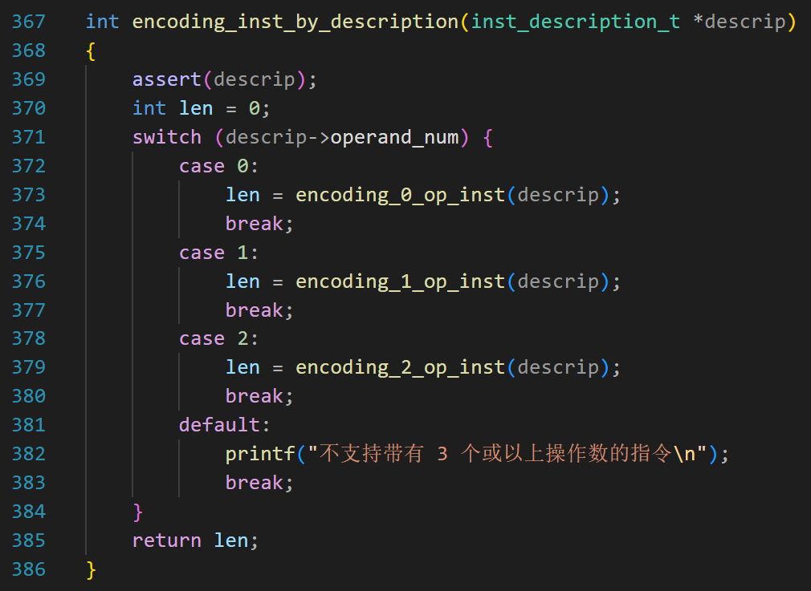
0个操作数
0 个操作数的指令最简单。
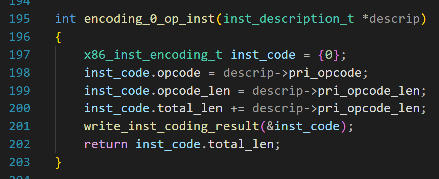
对于我们现在用到的 ret 和 cdq 指令，上面的代码就够了；
第 201 行的函数如下：
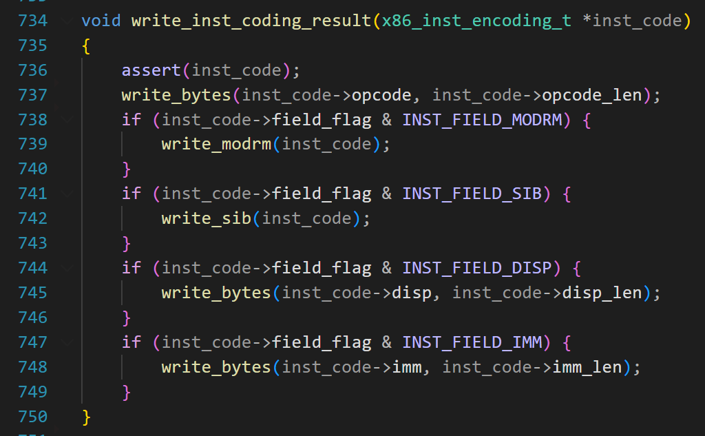
我们没有用到指令前缀，所以从 opcode 开始。
第 737 行，写 opcode；
第 738 行，如果存在 ModR/M 字段，则调用 write_sib；
744~749 同理，不赘述。
write_bytes 和 write_sib 的代码如下
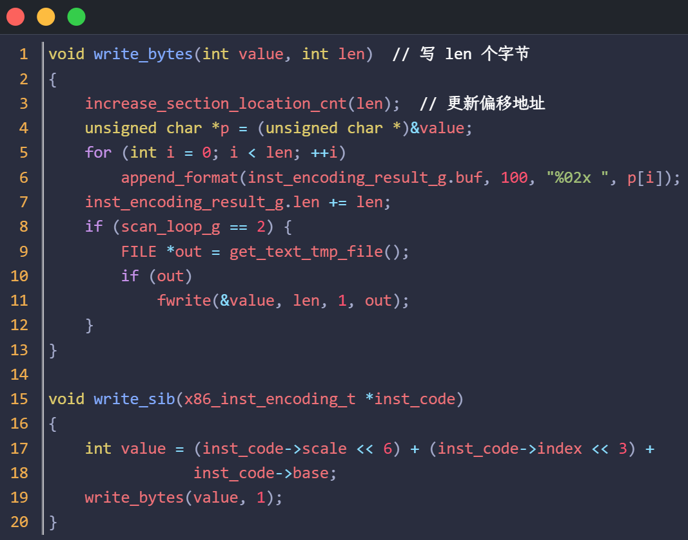
因为每个字段都不会超过 4 个字节，所以第一个参数不是指针类型，而是 int 类型。
第 3 行，更新偏移地址，这是必须的，因为指令也要占内存空间，需要增加段计数器。
第 4~6 为了调试方便，打印出编码的值，这不是重点。
第 8~11 行，在第二次扫描的时候，把生成指令编码写入到临时文件。
第 15 行是 write_sib，先组装每个字段，再调用 write_bytes 写入临时文件。
1个操作数
先看一个辅助函数，用来解析指令操作码的编码规则
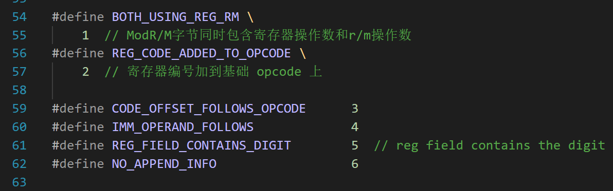
我们目前就用到了 5 个规则。所以我定义了一组宏。
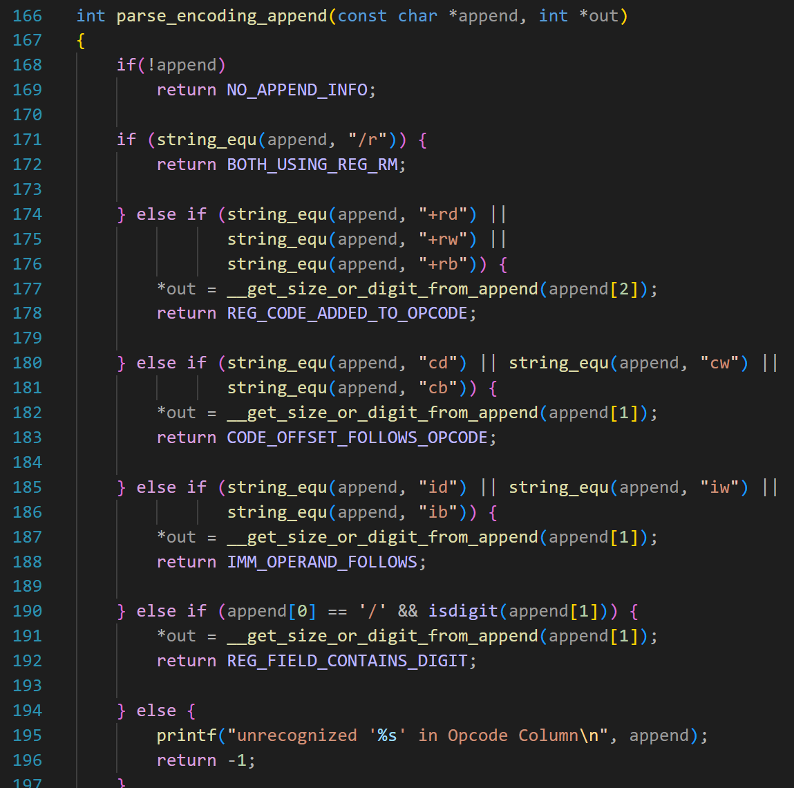
代码虽然多，但是不难。这个函数的第一个参数是模板提供的描述操作码编码规则的字符串；
第二个参数是输出型参数。
第 171 行，如果字符串是 “/r”，就返回 BOTH_USING_REG_RM，意思是同时使用 MODRM 字节的 reg 和 r/m 字段。
__get_size_or_digit_from_append（代码不贴了） 这个函数会进一步解析字符串里面的 d、w、b，或者 “/digit” 里面的 digit，结果用第二个参数（out）返回。例如 d 返回 4； b 返回 1；
__get_size_or_digit_from_append 的代码如下
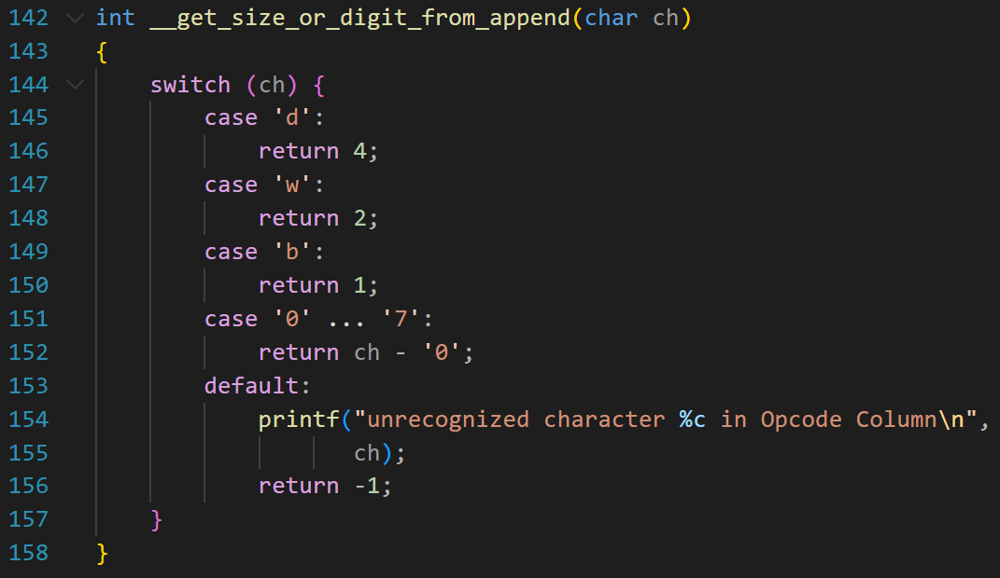
现在回到指令模板的添加函数 add_all_inst_description；
看看我们用到了哪些单操作数指令。
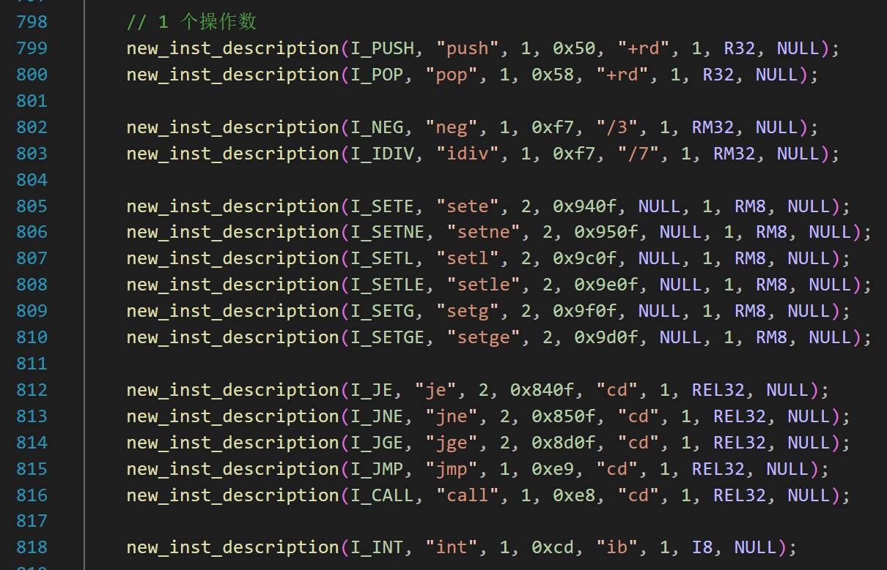
我们不是要给所有指令编码，也不是给常用指令编码，而是给我们用到的极少的指令编码。
对于一个操作数的指令，目前用到的就这么多。可以分成 5 类。
1、push、pop 指令需要把寄存器的编码加到主操作码上，不使用 ModR/M 字节；
2、neg、idiv 指令需要 ModRM 字节的 reg 字段，存放补充编码， ModRM的 r/m 字段编码操作数；
3、setcc 系列，ModRM的 r/m 字段编码操作数；
4、jcc 系列和 call 指令，rel32 跟在操作码后面；
5、int 指令, 一字节的立即数跟在操作码后面；
继续看代码
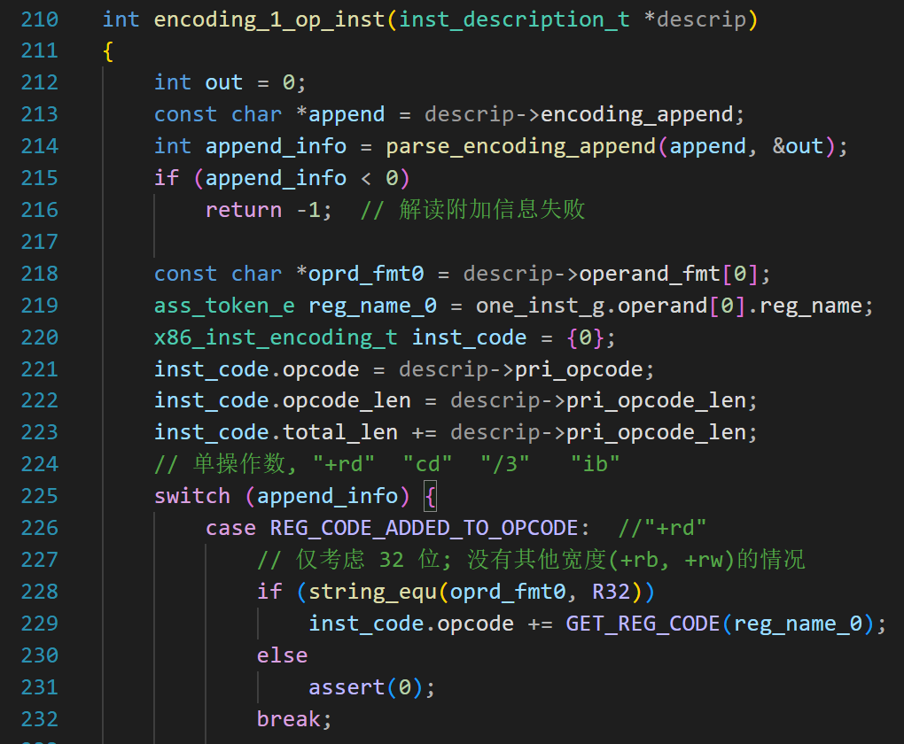
第 214，解析指令的操作码编码规则。
第 226，处理 “+rd” 的情况，也就是编码 push、pop 指令。
第 229，把寄存器的编码加到主操作码上;
GET_REG_CODE 是一个带参数的宏：
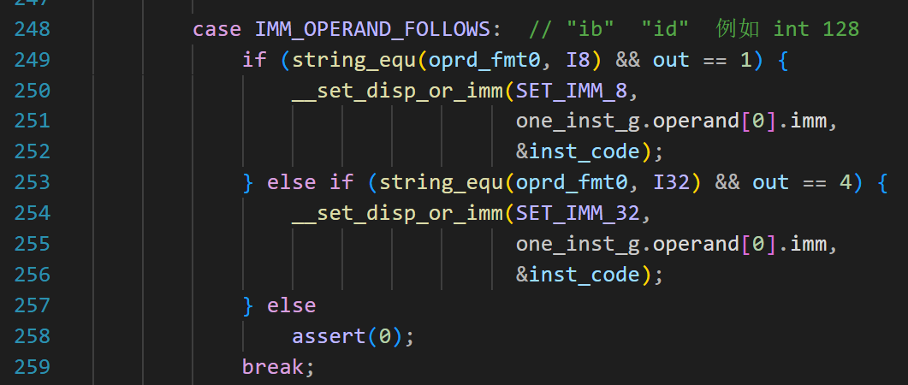
第 248 行，处理 “ib”(针对 int 指令)和 “id”。
第 250 的 __set_disp_or_imm 函数，作用如它的名字一样，设置 inst_code 的 disp 或者 imm 字段。
第 253~256 是处理 32 位立即数，虽然我们现在用不上，不过我一激动也给写上了。
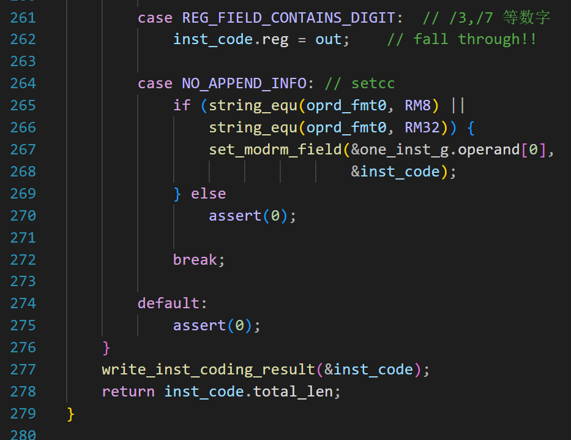
这是处理 setcc 系列和 neg、idiv 指令。
第 262，针对 neg,idiv 指令，得到 /digit 中的 digit,并用它编码 ModRM 字节的 reg 字段；
注意，没有 break；
第 264，NO_APPEND_INFO 的意思是不包含编码规则，setcc 系列没有操作码编码规则。
setcc 系列和 neg、idiv都需要用 ModRM的 r/m 字段编码操作数，只不过前者的格式 RM8，后者是 RM32；
第 267 行，set_modrm_field 函数，准确讲，这个函数用来设置 ModRM的 r/m 字段，如果需要也可能填写 sib, disp；但是不会填写 reg 字段。
复习一下之前学的 mod 字段的取值和寻址模式的关系：
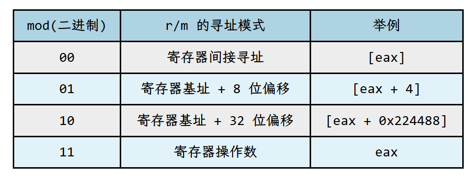
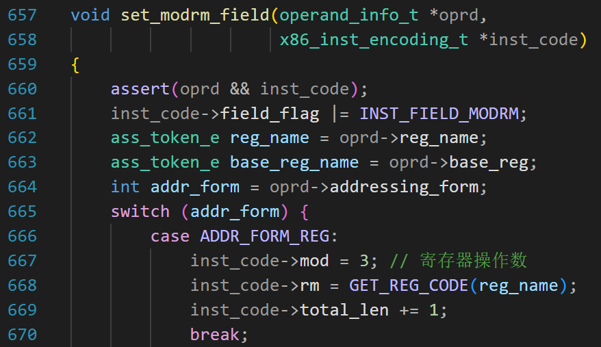
第 661，设置 ModRM 字段的标记。
第 662~663，从操作数信息中取出 reg_name 和 base_reg_name,这 2 个字段的区别在前文已经介绍了。
第 664，从操作数信息中取出寻址模式。
第 665，根据寻址模式，跳转到不同的分支。
第 666，这是寄存器操作数，所以设置 mod = 3;对应表格最后一行。
第 668，rm 字段设置成寄存器的编号。
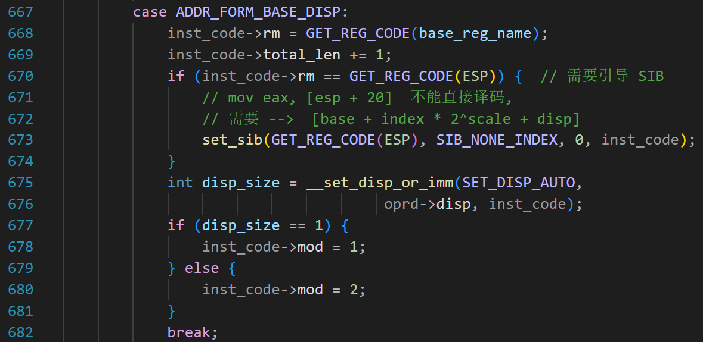
第 677 行，这是寄存器基址+8/32位偏移模式。
第 675 行，根据操作数中的 disp 的值，自动判断是 8 位还是 32 位；
具体讲就是如果 if (disp < 128 && disp >= -127) 成立，就是 8 位，否则是 32 位。
根据上面的表格，对于 8 位偏移，mod 的值是 1，对于 32 位偏移， mod 的值是 2；
需要注意的是，如果基址寄存器是 ESP，需要特殊处理，用 ModR/M 寻址无法表示以下指令：
mov eax,[esp]
mov eax,[esp + 8]
mov eax,[esp + 0x88886666]
必须有 SIB 字段。
第 673 行，设置 SIB，set_sib 函数代码是：
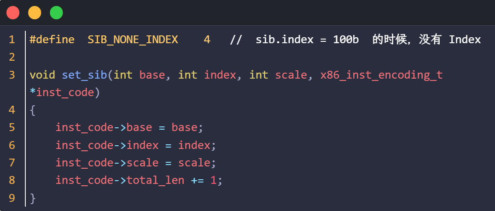
因为不需要变址寄存器；第二个参数 SIB_NONE_INDEX 是 4；
Intel 规定当 sib 的 index = 4 时，不存在 index；
第三个参数是 scale，取值 0-3 都可以。代码中是 0；
至于 disp 和 mod 的取值，代码 675~681 仍然适用。
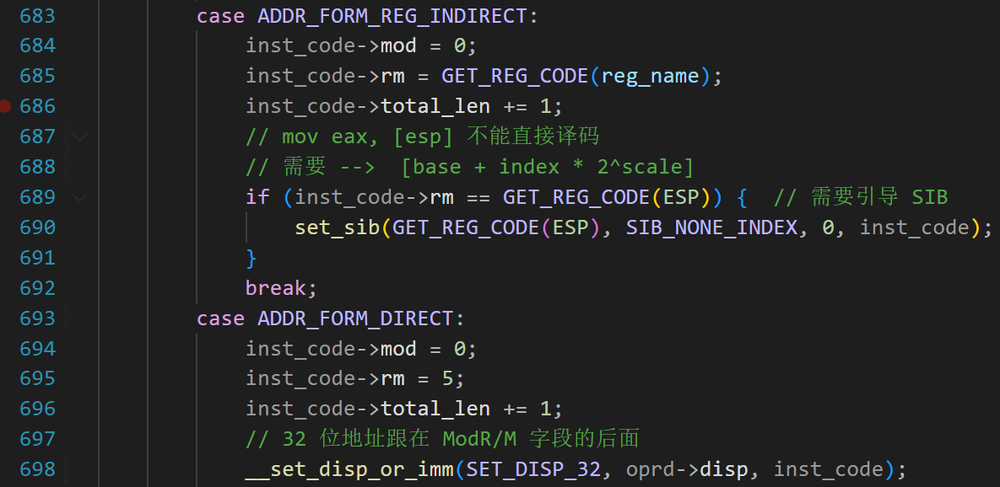
第 683 行，处理寄存器间接寻址的情况。
需要注意的是，如果寄存器是 ESP，需要特殊处理，和前面一样，调用 set_sib，不再赘述。
第 693 行，处理直接寻址模式；
Intel 规定，mod = 0, rm = 5, 表示直接寻址。
第 698 行，设置 32 位偏移。
以上，一个操作数的代码就说完了。
2个操作数
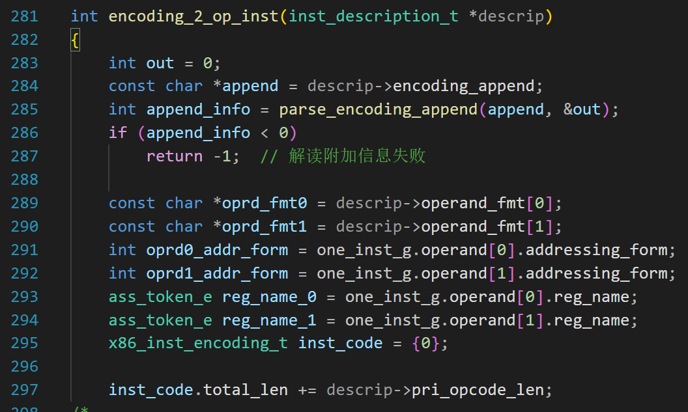
这几行和 1 个操作数的函数开头差不多，只不过因为 2 个操作数，所以有 oprd_fmt0 和 oprd_fmt1；oprd0_addr_form 和 oprd1_addr_form 等等。注意 oprd_fmt0 和 oprd_fmt1 都来自指令模板。
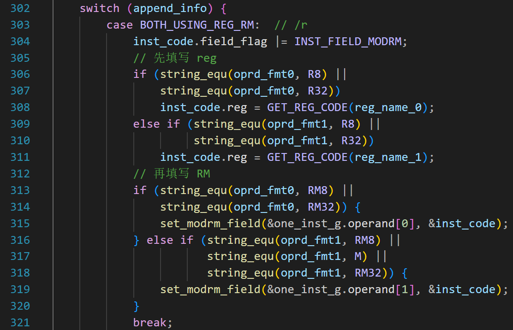
第 303 行，当操作数的编码规则是 “/r” 的情况。
如果操作数的格式是 R8 或者 R32，那一定是用 ModRM 的 reg 字段编码，所以第 308 行设置 reg 字段。
注意第 309 行用的是 else if；意思是说要么第一个操作数的格式是 R8 或者 R32，要么第二个操作数的格式是 R8 或者 R32；不存在两个操作数同时是 R8 或者同时是 R32 的情况，因为就没有 “mov r8, r8” 这样的指令格式。
第 313~314，如果第一个操作数的格式是 RM8 或者 RM32，则一定使用 ModRM 的 mod 和 r/m 字段编码，调用 set_modrm_field 函数。
第316~319，类似，不赘述。
注意，第 317 行有一个 string_equ(oprd_fmt1, M)
为什么会有这个呢？
这是因为 lea 指令：
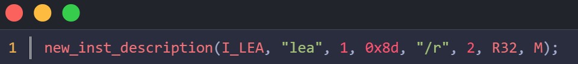
它的第二个操作数的格式为 “M”，意思是不限制内存的宽度。
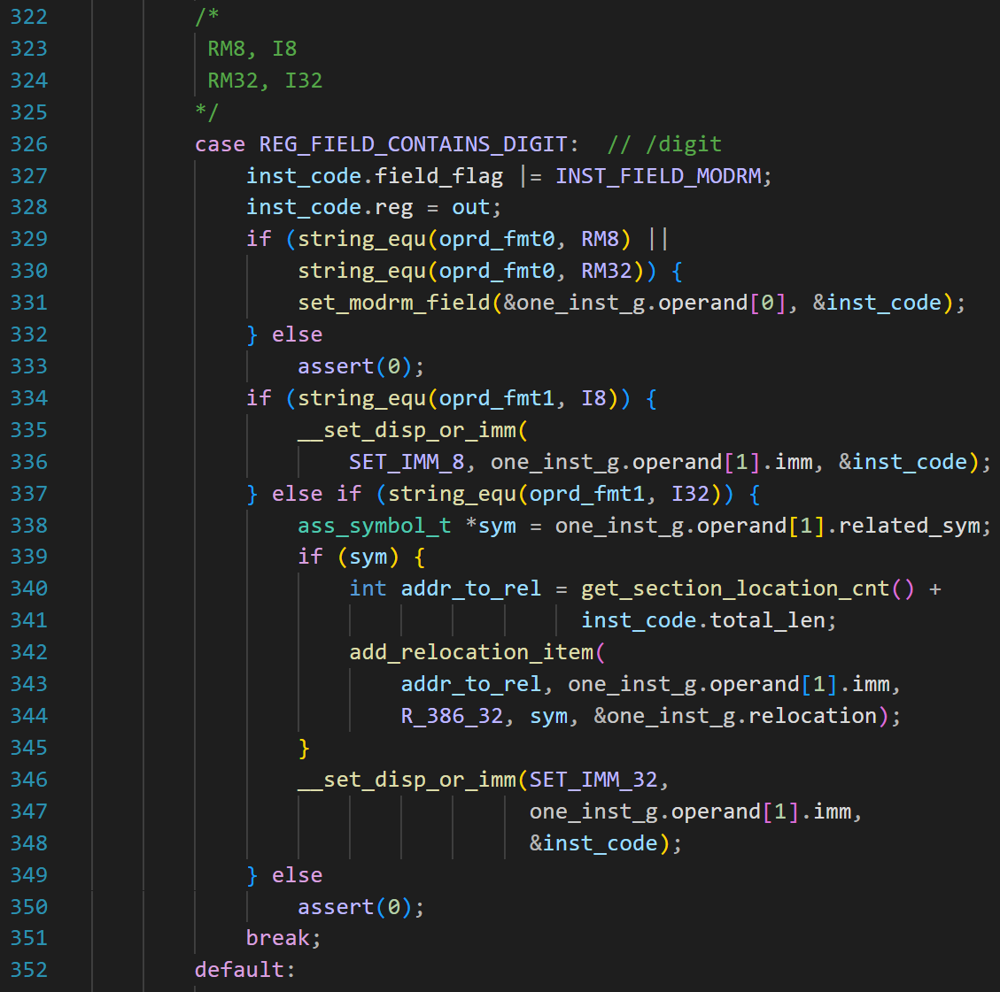
第 326 处理当操作数的编码规则是“/digit” 的情况。
第 328 行，设置 ModRM 的 reg 字段为 digit，这属于把 reg 挪作他用。
通过观察，第一个操作数的格式肯定为 RM8 或者 RM32，所以有第 329~331 行。
通过观察，第二个操作数的格式肯定为 I8 或者 I32，所以有 335 和 346；
第 339~345 牵扯到重定位，下节课再讲。
本文到这里就结束了，下节课我们学习符号重定位。